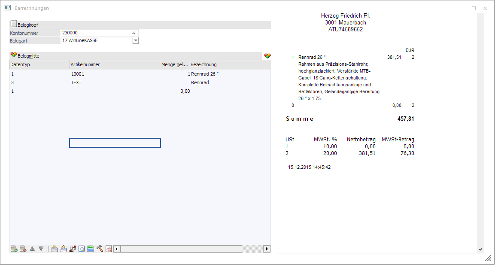
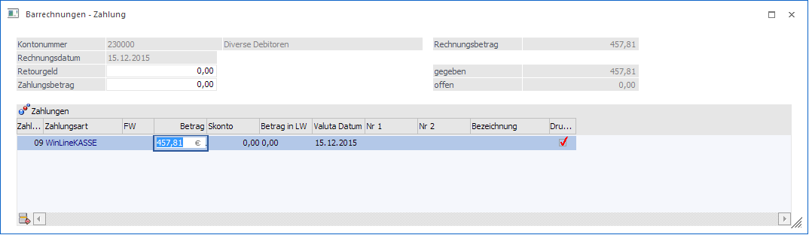
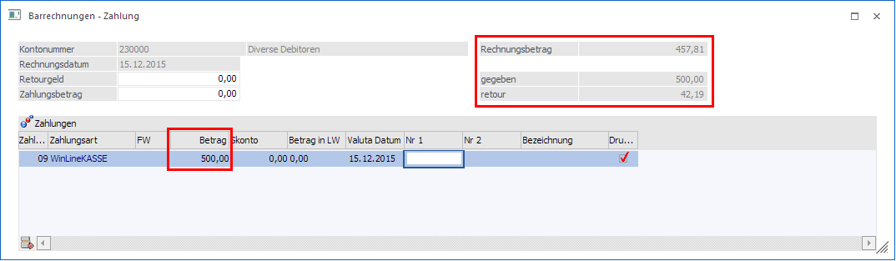
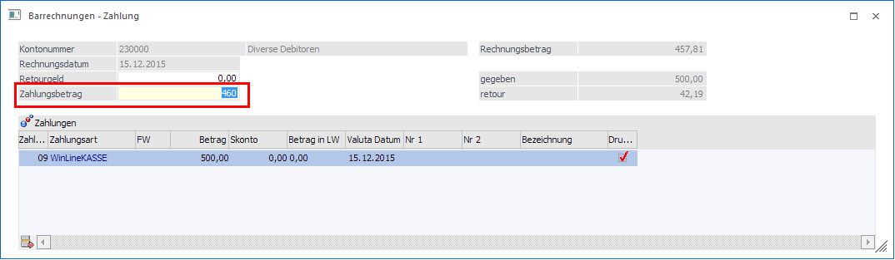
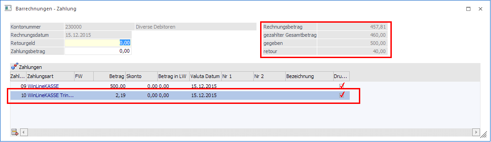
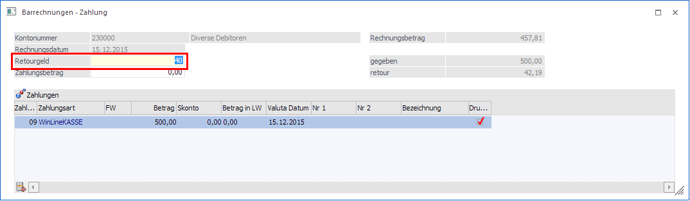

Im Menüpunkt…
1 WinLine FAKT
1 Erfassen
1 Belegerfassung
1 Barrechnungen
… können Barrechnung ohne Dashboard erfasst werden. Dieser Menüpunkt hat im Wesentlichen die gleiche Funktionalität wie das Belegerfassen mit folgenden Einschränkungen bzw. Erweiterungen:
ü Es können nur Belege in der Belegstufe "Faktura" erfasst werden.
ü Die Vorbelegungen des Belegkopfes aus der Vorlage werden berücksichtigt.
ü Das Fenster "Barrechnungen" darf nicht gleichzeitig mit einem der Buchungsfenster in der FIBU geöffnet sein.
ü Es können keine Zielrechnungen erfasst werden.

Grundsätzlich können hier alle Vorlagen verwendet werden, wo die Option "Barrechnungen" aktiviert ist. Abhängig davon sind dann auch die einzelnen Eingabefelder, die in der Erfassung bearbeitet werden können.
Wird die Option
Ø OIF anzeigen
aktiviert, wird rechts neben dem Erfassungsbereich ein Kassenbon (Tipstreifen) angezeigt.
Beim Druck des OK-Buttons wird, nach dem Rechnen der Faktura, das Fenster "Barrechnungen - Zahlung" geöffnet.

Hier wird unter
Ø Betrag
der gegebene Betrag eingetragen. Beim Öffnen wird immer der Endbetrag der Faktura vorgeschlagen.
Wird hier zum Beispiel bei einer Rechnung von 457,81 € ein Betrag von 500,- € gegeben so wird das Retourgeld von 42,19 € vorgeschlagen.

Wird vom Kunden aufgerundet - da er Trinkgeld geben möchte - so kann der Betrag, der vom Kunden bezahlt wird, unter Zahlungsbetrag eigegeben werden.

Nach dem Bestätigen des Feldes rechnet das Programm automatisch das "Trinkgeld" aus und zeigt das Retourgeld an.

Es kann ebenso eingegeben werden, wie viel Retourgeld ausbezahlt wird. Dabei wird auch die Differenz zum Rechnungsbetrag als "Trinkgeld" anzeigt.
